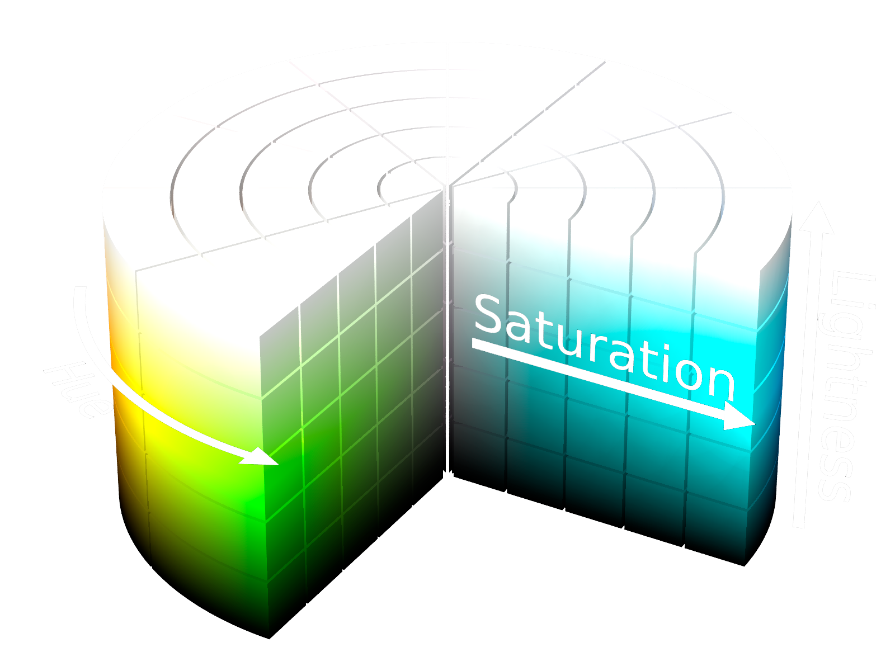
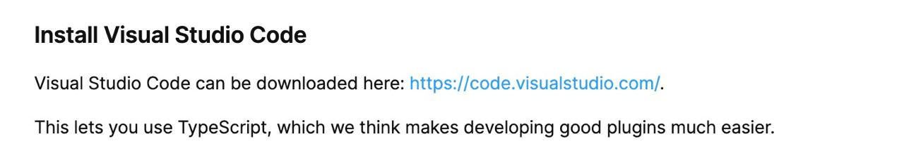

София Валитова, ВКонтакте
Я называю себя CSS-инженером.
Присылают вам макет, а там...
* проблема должна быть эмоциональной.
Год назад мы поменяли брендовый цвет.
#5181b8 -> #2787F5|
1234
|
|
| link | |
|
|
Всё первичное, что должно выделяться |
Оказалось, что...
| #5283b8 | |
| link | #5180b9 |
|
|
#5181b8 |
...всё покрашено в разных местах в чуть разные синие.
Очевидное решение: создаём переменную.
| var(--blue) | |
| link | var(--blue) |
|
|
var(--blue) |
Обратим внимание на имя переменной
У нас не один синий, у нас очень много синих
#4A76A8 #5181B8 #2A5885 #224B7A #1D3A5C #5C9CE6Получаем много переменных -> нужен хороший нейминг
gray_1: #E6E6E6gray_2: #CCCCCCgray_3: #B2B2B2gray_4: #939393gray_5: #828282gray_6: #656565gray_7: #555555gray_8: #333333gray_9: #222222
Серый — это...
одинаковые значение каналов
R = G = B
Три оси - hue, saturation и lightness
Тон цвета, представленный в виде угла цветового круга.
Насыщенность цвета
«Светлота» цвета
/** @param {<number> | <angle>} --hue Оттенок* @param {<percentage>} --saturation Насыщенность* @param {<percentage>} --lightness Яркость*/color: hsl (var(--hue) var(--saturation) var(--lightness));
gray_1: hsl(0, 0%, 90%)gray_2: hsl(0, 0%, 80%)gray_3: hsl(0, 0%, 70%)gray_4: hsl(0, 0%, 60%)gray_5: hsl(0, 0%, 50%)gray_6: hsl(0, 0%, 40%)gray_7: hsl(0, 0%, 30%)gray_8: hsl(0, 0%, 20%)gray_9: hsl(0, 0%, 10%)
gray_100: hsl(0, 0%, 90%)gray_200: hsl(0, 0%, 80%)gray_300: hsl(0, 0%, 70%)gray_400: hsl(0, 0%, 60%)gray_500: hsl(0, 0%, 50%)gray_600: hsl(0, 0%, 40%)gray_700: hsl(0, 0%, 30%)gray_800: hsl(0, 0%, 20%)gray_900: hsl(0, 0%, 10%)
Именуем обратно светлоте!
Подобных инструментов много, например, colorbox.io
В палитре есть цвета с прозрачностью.
Именуем их как *_alpha{alpha_value}
gray_800: #333333gray_800_alpha72: "#333333B8"gray_900: "#222222"gray_900_alpha16: #22222229
Не 50 оттенков серого, а 23.
Плагин для stylelint declaration-strict-value для запрета использования не переменных в правилах.
// stylelint.config.js
'scale-unlimited/declaration-strict-value': [[
'/color/',
'fill',
'stroke',
], {
ignoreKeywords: ['currentColor', 'transparent', 'inherit', 'unset' ],
}],
Мы именуем переменные, чтобы знать, что в них лежит.
Дизанерам тоже удобнее работать не с голыми хексами.
При ховере поднимать lightness на 10% (например)
| var(--blue_400) | это кнопка | |
| link | var(--blue_400) | это ссылка |
|
|
var(--blue_400) | это чекбокс |
Все ссылаются на один и тот же синий
-> если мы его поменяем, поменяется везде.
Создаем дополнительный слой абстракции.
| --button_bg | var(--blue_400) | |
| link | --link_fg | var(--blue_400) |
|
|
--control_bg | var(--blue_400) |
Теперь можем менять каждый по отдельности.
Создаем дополнительный слой абстракции.
| --button_bg | var(--light_green_50) | |
| link | --link_fg | var(--blue_400) |
|
|
--control_bg | var(--blue_400) |
Теперь можем менять каждый по отдельности.
Палитра (именованные цвета)
/* palette.css */--blue_400: #5181B8--black: #000000--green_350: #4BB34B
Схема (семантические токены)
/* scheme.css */--button_bg: hsl(--blue_400)--control_bg: hsl(--blue_400)--link_fg: var(--blue_400)--text_primary: var(--black)--text_positive: var(--green_350)
//palette.css:root {--red: #f00;}
//scheme.css:root {--primary: var(--red);}
//index.html<head><link rel="stylesheet" href="palette.css"><link rel="stylesheet" href="scheme.css"></head><body><style>button {color: var(--primary)}<</style><button>Button</button></body>
//palette.css:root {--red: #f00;}
//scheme.css:root {--primary: var(--red);}
//index.html<head><link rel="stylesheet" href="palette.css"><link rel="stylesheet" href="scheme.css"></head><body><style>button {color: var(--primary)}<</style><button>Button</button></body>
//palette_1.css:root {--blue: #00f;}
//scheme_1.css:root {--primary: var(--blue);}
//index.html<head><link rel="stylesheet" href="palette_1.css"><link rel="stylesheet" href="scheme_1.css"></head><body><style>button {color: var(--primary)}<</style><button>Button</button></body>
Можно перекрашивать один и тот же код под разные сервисы.
Где хранить пары ключ-значение? Конечно, в джсоне!
Где хранить джсон, который истользуют опенсорс проекты компании? Конечно, на гитхабе!
А теперь поподробнее....
Палитру и схему иногда правят люди, не привыкшие писать код, поэтому:
Считаем гитхаб первоисточником.
Генерируем цвета для всех платформ (и для фигмы тоже) из него.
const palette = require('palette.json');let css += ':root {\n';Object.keys(palette).forEach((colorName) => {css += ` --${colorName}: ${palette[colorName]};\n`;});css += '}\n';fs.writeFileSync(`css/palette.css`, css);
Коротко: с помощью плагина.
Длинно: давайте посмотри.
Писать плагины для фигмы довольно просто.
Первый плагин создается через интерфейс.
Object.keys(palette).forEach(colorName => {
const style = figma.createPaintStyle();
const [a, r, g, b] = ahex2rgbaArr(msg.palette[colorName]);
const solidPaint = { type: "SOLID",
color: { r: r, g: g, b: b },
opacity: a, };
style.name = `${msg.name}/${colorName}`;
style.paints = [solidPaint];
});
Мы типизировали переменные из палитры.
Зачем?...
#el {
background-color: red;
animation: anim infinite 3s;
}
@keyframes anim {
50% { background-color: blue; }
}
#el {
--color-stop: red;
background: var(--color-stop);
animation: anim infinite 3s;
}
@keyframes anim {
50% { --color-stop: blue; }
}
Потому что изначально css переменные не типизированы
div {
--name: red;
--name: 11px;
--name: calc(14deg * 3);
}
#el {
--color-stop: red;
background: var(--color-stop);
animation: anim infinite 3s;
}
@keyframes anim {
50% { --color-stop: 10px; }
}
Браузер не знает, как построить переход от одного значения к другому
red => ??? => blue
red => ??? => 10px
CSS.registerProperty({
name: '--color-stop',
syntax: '<color>',
inherits: false,
initialValue: 'transparent'
})
#el {
--color-stop: red;
background: var(--color-stop);
animation: anim infinite 3s;
}
@keyframes anim {
50% { --color-stop: blue; }
}
Object.keys(palette).forEach((colorName) => {js += ` CSS.registerProperty({name: '--${colorName}',syntax: '<color>',inherits: true,initialValue: '${palette[colorName]}',});\n`});
initial |
ключевые слова |
<length> |
простые типы данных |
<'line-height'> |
сложные типы данных (именуются обычно по свойству) |
[<A> | <B>] <C> |
группировка |
<A> || <B> || <C> |
один или более из группы в заданном порядке |
<A> && <B> && <C> |
один или более из группы в любом порядке |
<A>* |
ноль или более раз |
<A>+ |
один или более раз |
<A>? |
необязательный |
<A> {n} |
А повторяется n раз |
<A> {n, m} |
А повторяется не меньше n раз и не больше m раз |
<A># |
А повторяется один или более раз, разделенных запятыми |
export function registerColorVars() {if ('CSS' in window && CSS.registerProperty) {CSS.registerProperty({ /* --azure */})CSS.registerProperty({ /* --black */})...}}
#el {
animation: anim infinite 3s;
}
@keyframes anim {
0% { --color-stop: var(--blue_400); }
50% { --color-stop: var(--red_500); }
100% { --color-stop: var(--blue_400); }
}
Планируем завести еще палитры:
"title1_semibold": {"font_size": 24,"line_height": 28,"font_weight": 600,"font_name": "system"},.....
Планируем завести еще палитры:
{"S": 4,"M": 6,"L": 8,"XL": 12}
Планируем завести еще палитры:
{"vertical_spacing_size_xs": 4,"vertical_spacing_size_s": 6,"vertical_spacing_size_m": 8,...}
Планируем завести еще палитры:
{"disco": {"colors": ["0%": "#FFB726", "50%": "#FF2693"],"direction": "left","type": "linear",}, ...}
Презентация сделана с помощью Shower